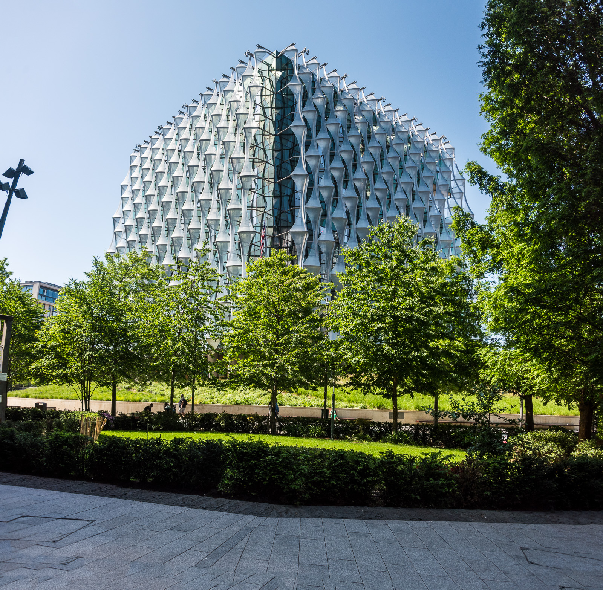
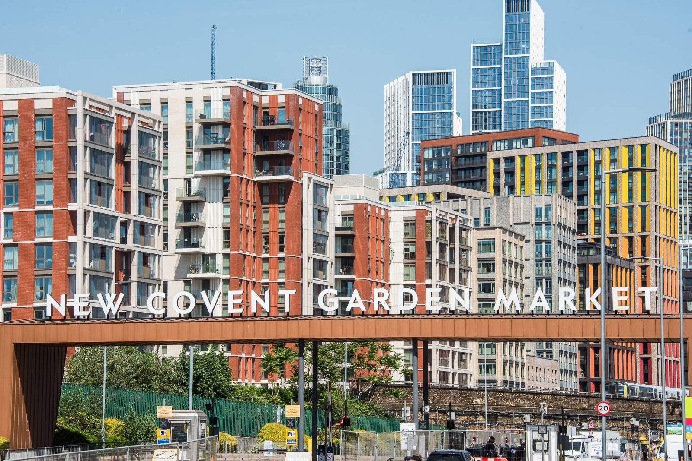
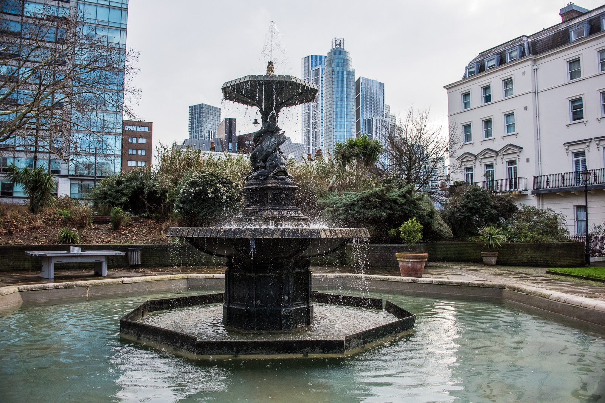
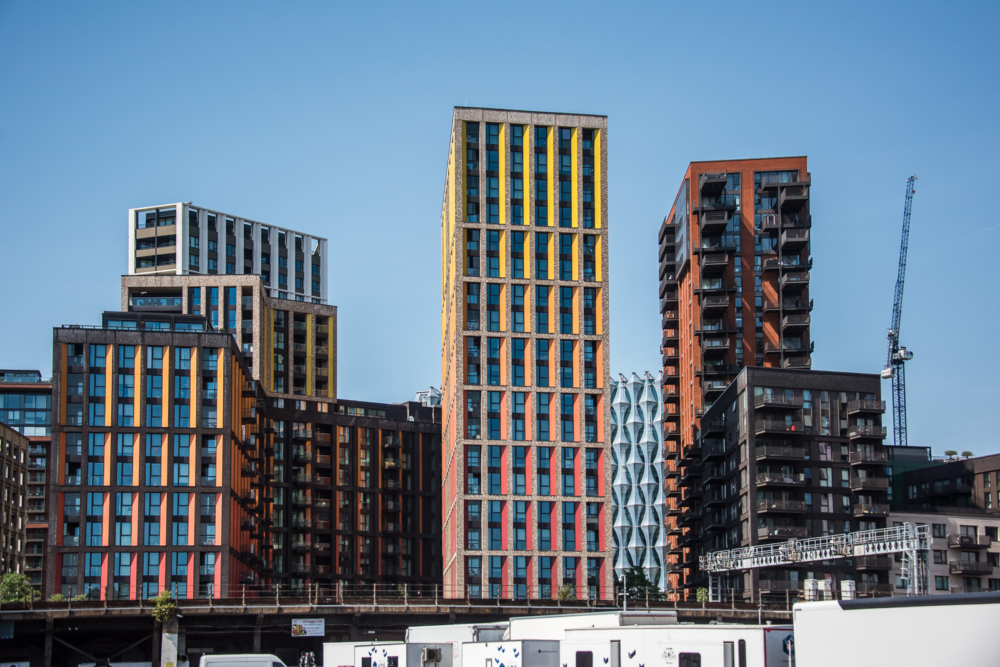
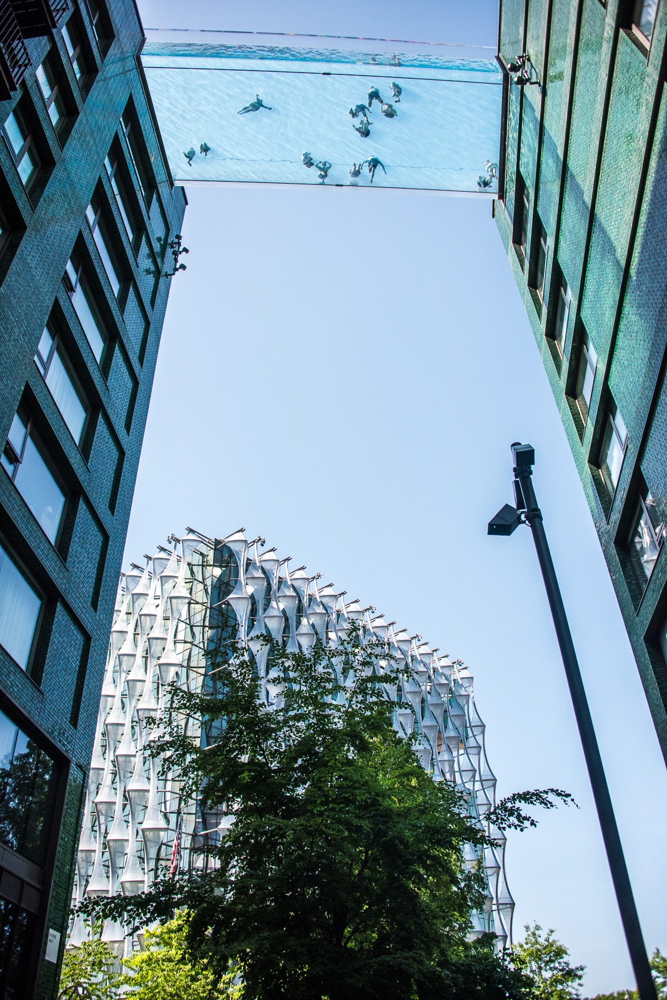
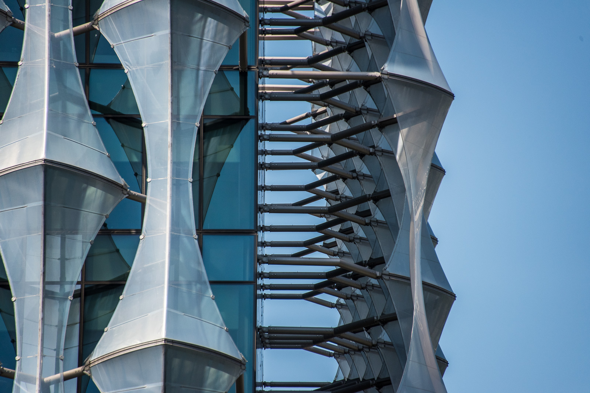
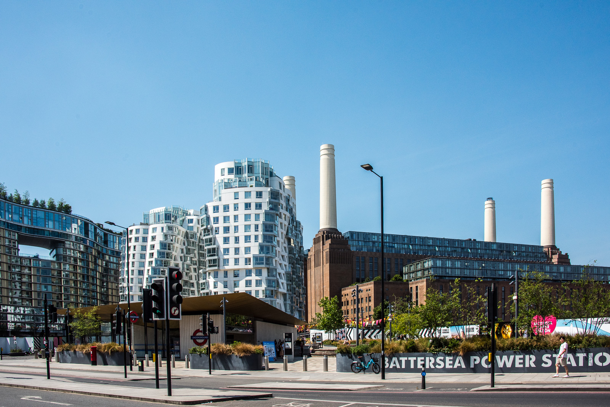

The Opportunity Area:
227 Hectares of Brownfield
The guide is an architect who works at what he calls the soft end of the profession, and leads walking tours for Open City. He is carrying a microphone because the Vauxhall gyratory system, five lanes of traffic in a continuous roar, would otherwise make much of the tour inaudible.

The walk covers what Transport for London and the GLA call the Vauxhall Nine Elms Battersea opportunity area — a 227-hectare strip of former brownfield land running from Lambeth Bridge to Battersea Power Station, split between the London boroughs of Lambeth and Wandsworth. By 2041, the plan proposes 20,000 new homes, 25,000 new jobs and 600,000 square metres of commercial space, all connected by a 4.8-hectare linear park running through the centre of the site.
For most of the 20th century, this was a hinterland of industrial sheds and service uses. The New Covent Garden Market moved here in the late 1960s and established enormous warehouses. The post office had depots here. Freight companies. Light industrial users of various kinds. Strangely industrial, given that it sits one mile from Parliament and directly across the river from Chelsea Embankment. That proximity is precisely why developers wanted it — and why, once planning permission became easier to obtain under the 2008 planning regime, the cranes arrived quickly and in large numbers.
The 2008 global financial crash coincided with this. International investors flooded into London real estate. The Conservative government made it easier to build tall buildings quickly. The result is the panorama visible from Vauxhall Bridge today: a skyline of largely residential skyscrapers, mainly selling river views to buyers who may or may not live in them.
Fox the Brute, Vauxhall Gardens
& the Industries of the South Bank
Twenty-five rivers run into the Thames in London. The River Effra ran more or less through the site of what is now the MI6 building. The River Tyburn entered the Thames just upstream. The area was marshy and flood-prone — which is partly why the north bank developed first, and partly why the south bank has always been more industrial than residential.

One of King John's knights — Faux le Brun, anglicised over centuries into Fox the Brute and eventually into Vauxhall — built a grand hall somewhere near the present-day MI6 building in the medieval period. The hall became known as Foxhall, then Vauxhall. The name has nothing to do with cars; the car company chose it for its London associations.
Around 1660, Vauxhall Gardens emerged as one of the first genuinely public parks in London — important because most of the other parks were royal, effectively closed to the general public. It became fashionable, then populist, then gradually declined. The industries that replaced it in the 19th century included candle and soap manufacture, glass, starch, sugar baking, distilling, vinegar production and brewing. Up towards Battersea, the land flooded often enough that the soil was very fertile; a large market garden supplied much of London. New Covent Garden is the direct descendant of that market garden tradition.
Bazalgette's Sewers
& the Tideway Tunnel
Joseph Bazalgette built the Albert Embankment on this side of the river as part of his solution to the Great Stink of 1858 — the catastrophic cholera outbreak that killed 10,000 people and was traced to the raw sewage pouring into the Thames. His sewers run underneath the embankment you walk along today.
Bazalgette calculated the diameter of the pipes he needed, then doubled it. The population of London at the time was around 2.5 million. He built capacity for 4 million. The sewers are still in use, still working, 160 years later — though they are beginning to fail. The Tideway Tunnel — a seven-metre-diameter overflow sewer running 25 kilometres from Acton to Becton — is just about to open. As Bazalgette's pipes eventually give out, the sewage will be transferred to the new tunnel, which is gravity fed and will not need pumping. Where the Tideway crosses the surface, there will be public parks. A large one is opening at Blackfriars; another near Chelsea Hospital.
The MI6 Building:
Designed as Flats, Repurposed as Spies
The Secret Intelligence Service building — known universally as MI6 — was designed by Sir Terry Farrell and opened in 1993. The story of how it came to be what it is involves a last-minute change of use.
A developer held an architectural competition to design luxury riverside apartments. Terry Farrell won. He designed what is essentially a residential building — which is why it has those large terraced balconies facing the river, which would have been spectacular outdoor space for flats, and which now serve no obvious purpose for a spy headquarters.
In the early 1990s recession, the project stalled. The brief changed — from luxury flats to speculative offices. Farrell stripped out the partitions and created open floor plates. Then the Thatcher government decided MI6 needed a new home and took the building. Everything had to change again: bomb-proof concrete was added, triple glazing installed not for thermal or acoustic reasons but for spy reasons, the whole building made as secure as possible. It became the most recognisable spy building in the world, partly because James Bond drove past it in Skyfall and partly because it was spectacularly blown up in the same film. Farrell, now in his 90s and still practicing, has noted this with some equanimity.
St George Wharf &
The Skyscraper That Opened the Floodgates
St George Wharf — the massive development with the 49-storey tower visible from Vauxhall Bridge — was the first major sign that this area was about to change. 1,400 homes, designed by Broadway Malyan in a style clearly influenced by the Terry Farrell building it faces: cream render panels, green glazing.

The tower required planning permission that Lambeth Council refused. Under the New Labour government, John Prescott — the Deputy Prime Minister — overruled the refusal and approved it. The guide notes that Prescott knew a great deal about a great many things, as his obituaries made clear.
"Once you allow one skyscraper through, you set planning precedent, and you will really not stop them."
— The guide
The tower subsequently became famous for a different reason: a helicopter crashed into a crane on its roof during construction, killing two people. The penthouse at the top — five storeys, the entirety of London's swimming pool notoriously described as fitting inside it — sold for a figure that illustrated exactly who this development was aimed at.
Keybridge:
What Good Regeneration Looks Like
Keybridge is, in the guide's view, the best example on this walk of what this kind of regeneration can actually achieve when a good architect and a good planning officer are involved. It sits away from the gyratory, in a more traditional urban setting with existing shops and a church on one side. It is 1.2 hectares — a former BT telephone exchange that has been converted and extended into 598 homes across three towers and two mansion blocks.


Money was put into renovating the church on the corner. A primary school opposite that was landlocked and needed more classroom space got new classrooms built into the ground floor of the development. A nearby community café that was struggling received renovation funding. And ten affordable duplex and town houses were provided as part of the Section 106 agreement — not the minimum possible, but a genuine contribution.
The landscape is high quality: real investment in the spaces between the buildings, not concrete mixed and left. The brick cladding — not structural brick but brick slips on a concrete frame — is handled with care, the joints detailed properly, the windows considered. It looks like somewhere rather than simply like a housing block. The commercial and office uses occupy the ground floors facing the main road, so the space is activated and the worst of the noise is buffered before you reach the residential courtyard.
Embassy Gardens
& the Sky Pool
The American Embassy — a Foster + Partners building, fortress-like, surrounded by a defensive moat, the US State Department having put considerable money into the public realm around it — anchors one end of the linear park. Embassy Gardens is the development immediately adjacent.


Embassy Gardens became internationally famous for the Sky Pool: a glass-bottomed swimming pool suspended between two residential towers, ten storeys up, so that swimmers could look straight down at the street below. The pool connects residents of the two buildings and is available only to residents. The guide notes that the marketing for it — "swim between buildings" — was extremely effective and generated coverage in newspapers worldwide. The coverage was largely incredulous. This was precisely the point.
The interior design of the luxury units was by Versace Home. The developer, Damac, has strong relationships with Donald Trump, having built trophy golf developments for him in the Middle East. The student accommodation building further along — 841 beds, 37 storeys — was completed in 2021 by T.P. Bennett architects.
Battersea Power Station:
Forty Years & Twelve Bankrupt Developers
Battersea Power Station was built in two phases: the first between 1929 and 1935, the second — a mirror image of the first — in the 1950s. Together they created the famous four-chimney silhouette. The station closed in 1983. What followed was forty years of failed redevelopment proposals.

The core problem: the site was enormous, listed, extremely expensive to restore, and — until the Northern Line extension opened in 2021 — completely unconnected to public transport. At least ten or twelve developers went bankrupt trying to make something work here, the guide says. Without a tube station, you simply cannot get enough people to a site of this scale to make any retail, leisure or commercial use economically viable.
The Northern Line extension cost £1.2 billion to build two new stations — Nine Elms and Battersea Power Station itself. TfL, the GLA and central government contributed, but the developers around both stations were also required to put money in. Some of them have since reneged on their affordable housing commitments, claiming that their contribution to the tube extension takes precedence. The three towers consented on top of the station boxes have been started and then stopped again. Nobody is sure whether they will be built.
The power station itself is now open — shops, restaurants, offices, events space, apartments. The chimneys were rebuilt from scratch, the originals having deteriorated beyond repair. The renovation took years longer and cost considerably more than anyone anticipated. Apple has its European headquarters in the turbine hall. The public realm around the river frontage is impressive.
"This whole area is really a glorious mishmash. Compare it to King's Cross — one landowner, one architect, one vision, one timeline. Here you've got desperate pots of land with different owners, different tastes, different timescales. And somehow it all collides."
— The guide